Вітальня · журнал «ДентАрт» 2023 №1
Вальтер ван Дрієль (президент Європейської секції ICD): «У центрі нашої уваги сьогодні — гуманітарні проєкти»
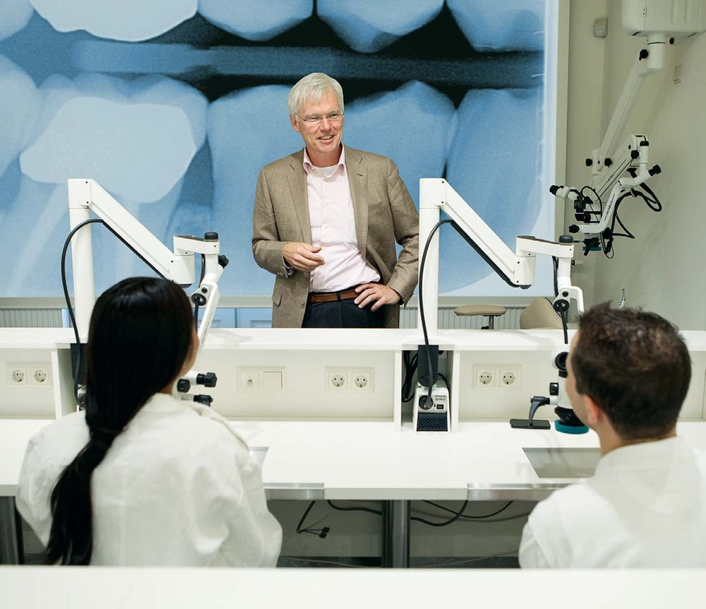
Онлайн-гість Вітальні «ДентАрту» — професор Вальтер ван Дрієль, президент Європейської секції Міжнародного коледжу стоматологів (ICD), почесний член Нідерландської асоціації ендодонтистів. Його знають як талановитого викладача і лікаря, який надає ендодонтичну допомогу у найскладніших клінічних випадках.
Онлайн-гість Вітальні «ДентАрту» — професор Вальтер ван Дрієль, президент Європейської секції Міжнародного коледжу стоматологів, почесний член Нідерландської асоціації ендодонтистів. Його знають як талановитого викладача і лікаря, який надає ендодонтичну допомогу у найскладніших клінічних випадках. А ще — як умілого організатора, тож дуже цікаво було дізнатися про його плани на період президентства в Європейській секції ICD…
Я не знав нічого кращого, ніж піклуватися про інших
— Шановний Вальтере, вітаю Вас від імені колег, читачів журналу «ДентАрт» і дякую за можливість інтерв'ю. Прошу відповісти на кілька запитань…
— З радістю, якщо це можливо.
— Розкажіть, будь ласка, чому Ви стали стоматологом і як просувалася Ваша стоматологічна кар'єра після початкового навчання?
— Люди живуть своїм життям поодинці або з родиною. А щоб заробляти на життя, потрібно працювати. Робота, яку ви виконуєте, може бути частиною кар'єри, яку ви свідомо обрали, якій навчалися, а іноді це може бути вашим хобі. Це дуже добре, але тепер я знаю: реальність зазвичай інакша. Багато людей виконують роботу, що якимось чином трапилася їм, ніби вросла в них і стала частиною їхнього життя. Як і дохід, який вона забезпечує. Над питанням «чому» замислюються рідко.
Проте освіта і турбота про інших — це різне. Здається, це приваблює уяву настільки, що люди цим цікавляться: чому ви стали вчителем, лікарем, стоматологом? Мені подобається піклуватися про інших. Але як це зародилося в мені? Ви запитуєте, чому я став стоматологом. Щоб дати змістовну відповідь, я маю спочатку розповісти дещо про своє дитинство та свою родину.
Я народився у 1959 році, шостим у родині з дев'ятьма дітьми (різниця у віці між найстаршим і наймолодшим — 20 років). Це була жвава сім'я, багато галасу та веселощів у будинку, де все було можливо. До нас приходило багато наших друзів, зокрема тому, що ми єдині в окрузі мали чорно-білий телевізор, що було чимось особливим на той час. Моя мати була спокійною, турботливою, прагматичною і доброю до всіх. Щосереди, лише по 5 центів за пакетик, вона купувала розламане печиво, вже непридатне для продажу. Діти не заперечували, адже смак був той самий. Це навчило нас радіти тому, що маємо, добре проводити час з обмеженими статками.
Ми дуже рідко бачили нашого тихого і стриманого батька. Він був інженером-розробником і вченим, працював у фізичній лабораторії всесвітньо відомої групи Philips. Вдома у нього був власний кабінет, «кімната на балконі», з бібліотекою. Це була єдина кімната, куди було обмежено вхід як меншим, так і старшим дітям. Це не було заборонено, проте наука — це святе, тому не варто було відволікати тата.
Коли я подорослішав, мене дедалі більше цікавили книги мого батька. Під приводом виконання домашнього завдання я все частіше заходив «провідувати» татуся і поступово зрозумів, наскільки самотнім і чутливим він був. У мене розвинулося почуття великого жалю до нього, бо я бачив, як мій батько повинен був читати всі ті надзвичайно важкі книжки іноземними мовами. З його дефектом зору (максимум «+» на одному оці і максимум «–» на другому), у кімнаті, куди проникав шум переповненого будинку, мабуть, це важко, думав я. Йому заважав шум, і я це бачив. Малим хлопчиком я заходив у кожну кімнату нашого великого будинку, просячи старших братів зробити музику тихіше. Можете собі уявити? Хлопчик, один з найменших, просить старших братів дотримуватися тиші, тому що батько повинен читати складні книжки.
Так чи інакше, я, єдина дитина з великої родини, з 11 до 17 років проводив вечори у кімнаті батька. Я сидів позаду його столу, виконуючи домашні завдання, і водночас дивився, як батько тихо сидів у кріслі з бічним світильником у кутку кімнати й навчався. Його окуляри були на голові, рукою він прикривав ліве око, а книжку для читання розташовував менш ніж за 10 сантиметрів від правого ока. Рухи голови зліва направо під час читання сторінки одним оком були для мене показником того, що у нього все добре. Якби він зупинився через галас чи гучну музику, я б повернувся назад попросити, щоб було тихо. Ви можете подумати, що це б створило мені проблеми у спілкуванні з іншими дітьми, особливо зі старшими. Але правда в тім, що саме так я відчував свою цінність. Я дедалі більше усвідомлював, що доглядаючи за батьком і беручи на себе його обов'язки, я полегшував своїй матері завдання опікуватися великою родиною. Я робив це із задоволенням, упевненістю і в результаті помітив: у сім'ї все було добре.
Я продовжував піклуватися про свого батька навіть під час навчання в середній школі. Турбота про нього дала мені багато. Я мав хороші результати вдома, у спорті та іграх, у школі та у спілкуванні з друзями, і це ощасливило мене. Фахівці з психології називають таку поведінку парентифікацією і вважають, що є причини для хвилювання, коли дитина надто рано бере на себе роль дорослого, як емоційно, так і соціально. Це ставить дитину в роль радника, розрадника чи посередника в занадто ранньому віці, коли вона ще надто мала для цього. На той час це мене не хвилювало, наскільки я пам'ятаю, мені це подобалося.
Я не знав нічого кращого, ніж піклуватися про інших, і це спонукало мене навчатися, а згодом стати лікарем. Той факт, що я опинився в стоматології, теж частково пов'язаний з враженнями дитинства. Я завжди вважав, що це була особлива подія, коли вся наша сім'я одночасно йшла до стоматолога. Навіть двоє моїх старших братів, які вже поїхали навчатися в Амстердам, поверталися додому, їхали три години на південь тільки заради цього! Стоматолог не поспішав, уся приймальня була для нас, і ми один за одним заходили в його кабінет. Обладнання, матеріали і красиві блискучі інструменти, атмосфера та типовий запах евгенолу — усе це мене дуже приваблювало і справило на мене сильне враження. Тож ще дитиною я сказав собі, що буду стоматологом.
Ви також запитуєте про початок моєї стоматологічної кар'єри і як вона розвивалася. Мені важко це описати. Я працюю стоматологом уже 39 років, і насправді це не відчувається як кар'єра, скоріше як досвід!
Навчання в Амстердамі базувалося на так званій старій програмі, коли 6 років тривало вивчення теорії. На практиці це означало, що в перші три роки мало уваги приділялося вивченню стоматології, більше — біомедичним наукам паралельно з вивченням медицини. Лише у другій половині курсу з'явилася стоматологія, лікування стоматологічних пацієнтів.
Невдовзі я зрозумів, що загальна стоматологія — це не моє. На жаль, мені не вистачило сміливості, енергії та наполегливості повернутися назад і почати новий курс. Я продовжив навчання і в останній його період виявив, що мене особливо цікавить ендодонтія. Ця спеціальність мені підходила. Вислуховувати проблеми пацієнтів, серйозно ставитися до їхніх скарг на біль, які можна неправильно зрозуміти, проявляти співчуття і надавати необхідну допомогу — турбота про цю категорію пацієнтів приносила мені задоволення. Це також відповідає моїй натурі, я можу бути впевненим у собі, мені не потрібно показувати щось видиме як красиву естетичну стоматологічну роботу. Усього цього було достатньо, щоб продовжувати працювати, надихатися та бути вмотивованим.
Мій учитель Пауль Весселінк, професор ендодонтії, визнав мої уподобання і талант до цієї професії. Невдовзі після мого випуску в 1984 році професор Весселінк подбав про те, щоб я продовжив опановувати професію ендодонтиста, і він допомагав мені в цьому. Я працював в університеті в Амстердамі протягом 20 років, викладаючи карієсологію та ендодонтію. Я також знайшов власний шлях як спеціаліст-стоматолог у своїй ендодонтичній практиці. Свідомо працюю в невеликій команді з Карлою, яка була моєю вірною та відданою «правою рукою» у практиці вже понад 20 років. Це моя натура — брати повну відповідальність з догляду за довіреними мені пацієнтами.
Після двадцяти років в університеті я вирішив за потрібне піти. Не хотів ставати на заваді новому поколінню викладачів, перешкоджати їхньому розвитку та свободі. Але викладання — це те, від чого я не можу відмовитися зовсім. Передавати знання, навички й досвід є частиною мене. Я вважаю, це також спосіб піклування. Разом із моїм добрим другом і колегою Майклом Смилдерсом ми керуємо навчальним центром, який спеціалізується на використанні хірургічного мікроскопа в стоматології. Ми організовуємо практичні курси, де молоді стоматологи можуть здобути практичні навички на майбутнє.
Мені приємно чути слова вдячності від багатьох людей, коли я зробив свій невеликий внесок у здоров'я ротової порожнини та їхнє гарне загальне самопочуття. Я дорожу довірою своїх колег, які допомогли мені стати почесним членом Нідерландської асоціації ендодонтистів.
— Як Ви дізналися про Міжнародний коледж стоматологів та коли стали його членом?
— Уперше я почув про існування Міжнародного коледжу стоматологів у 1997 році. Кілька його членів, яких я знав, фахівці з різних дисциплін та організацій, розповіли мені про ICD. Висловлювали різні точки зору та прихильність. Тоді все це здавалося дещо розпливчастим і трохи таємничим, тому що це була спільнота «тільки за запрошенням». І навіть, здавалося, певною мірою хвастощі, що мені зовсім не подобається. У мене ще не було справжнього інтересу, але він зростав, коли я краще розумів, хто є членами ICD у Нідерландах.
Згодом мені зателефонував доктор Ян Памеєр, він хотів призначити зустріч, щоб завітати в гості. І ось тоді мене запросили. Доктор Памеєр — відомий усім, визнаний стоматолог, який має високий авторитет як практикуючий стоматолог-ортопед, лектор і провайдер курсів, автор і доповідач. Водночас він має унікальний характер, щиро цікавиться людьми і є надзвичайно доброю, товариською людиною з гарним почуттям гумору. Ви не можете сказати «ні» докторові Памеєру. Ми з ним стали добрими друзями завдяки ICD і напрацювали величезний досвід разом як удома, так і за кордоном. Навіть зараз, у його поважному віці — 91 рік, ми часто з великим задоволенням зустрічаємося і весело проводимо час.
У 2000 році доктор Франс Крун, який був регентом округу Бенілюкс, призначив мене членом організації ICD у Більбао, Іспанія. Президент Хайме Гіл простягнув мені праву руку братерства!
Відвідав 21 щорічну зустріч ICD, і кожна з них була чудовою!
— З тих пір, як Ви стали членом ICD, який момент Вам найбільше запам'ятався?
— Як я вже згадував, я став членом ICD у червні 2000 року у віці 41 рік (у мій день народження). Майже одразу почав працювати в окрузі Бенілюкс, частково завдяки тому, що добре знав кількох видатних членів ICD у Нідерландах, які вже давно відомі своїми досягненнями. Вони були для мене головними вчителями і наставниками — доктор Дік ван дер Харст (міжнародний екс-президент Коледжу), доктор Ян Памеєр (президент Європейської секції 1999 р.) і доктор Франс Крун (президент Європейської секції 2010 р.). Будучи молодим практикуючим стоматологом, я також знав докторів Чарлі Норда та Франса Ланхофа, співзасновників Європейської секції ICD і міжнародних президентів. На міжнародному рівні я вже був добре знайомий з доктором Філіпом Доуелом, міжнародним президентом Коледжу, та доктором Пітером Пре, який був президентом Європейської секції у 2004 році. Те, що я вже був знайомий з цими джентльменами, допомогло мені, і я вважаю великим привілеєм і честю те, що вони так сильно допомогли та підтримали мене в моєму розвитку як особистості, колеги і члена ICD. Я все ще шанобливо ношу мантію з іменною позначкою Франса Ланхофа на офіційних зустрічах ICD. Я обіймав усі посади в правлінні ICD, регента Бенілюксу, скарбника, фінансового директора, редактора, а тепер президента та міжнародного радника. Окрім двох (через важливі причини), я відвідав 21 щорічну зустріч відтоді, як став членом ICD, і кожна з них була чудовою. Я був у місцях, куди інакше б не поїхав, і зустрічав людей, яких інакше б не зустрів. Знайшов друзів на все життя.
Ви запитуєте мене про момент, який найбільше запам'ятався з того часу, як я приєднався до ICD. Це запитання, на яке неможливо дати відповідь, це те ж саме, що запитати, хто мій улюблений онук. Усі четверо мені однаково дорогі й важливі, я дуже люблю їх усіх! Але я хотів би згадати два важливі моменти під час мого членства в ICD, один на рівні комунікації з людьми, а інший на виконавчому рівні: отримання почесного членства Італійського округу від доктора Мауро Лабанка та запрошення на посаду редактора від доктора Дова Сіднея.
Потрібно мотивувати, надихати та адаптуватися до мінливого світу
— Чого Ви найбільше очікуєте під час перебування на посаді президента Європейської секції протягом одного року?
— Я жодним чином не претендую бути провидцем, але щоб дати змістовну відповідь на це запитання, я б рекомендував читачам звернутися до редакційних статей ICD, які я написав з 2013 по 2017 рік. У той час я в заголовках писав про таке: постійність поміж змін (2013), виявити кращих (2014), трансформація традицій (2016), продовжуй говорити (2016) та будь ласка, тримайтеся, я об'єднаю вас (2017). Цю серію можна читати як одну історію. На мою думку, зміни загалом необхідні. Вони не завжди є позитивними, проте потрібно мотивувати, надихати та адаптуватися до мінливого світу, забезпечувати інклюзивність, рухатися вперед, вчитися і працювати краще.
«Якщо ви продовжуєте думати так, як ви думали, ви продовжуватимете робити те, що ви робили, створюючи те саме знову і знову» — цей вислів є чітким ствердженням у цьому контексті. На час перебування на посаді президента я з нетерпінням чекаю можливості продовжувати взаємодіяти з колегами, прислухатися один до одного, щоб переконатися, що ми залишаємося авторитетними для нового покоління стоматологів.
Амстердам — старе місто, що закохує…
— У червні відбудеться щорічна зустріч Європейської секції в Амстердамі. Які основні моменти цієї зустрічі?
— Передусім прикметним є той факт, що зустріч знову відбудеться в Амстердамі через чверть століття. Місто відоме тим, що поєднує в собі особливості багатьох культур, є відкритим та вільним, хаотичним, але безпечним і дружнім, толерантним до всього і всіх. Словом, Амстердам — це старе місто, що закохує. У кожного буде безліч можливостей оглянути центр міста і повечеряти в одному з багатьох чудових ресторанів. Вибір великий!
Виставка ArtZuid особлива. Ця подія, яка буває лише раз на два роки, включає прогулянку вздовж великих, всесвітньо відомих мистецьких скульптур. І це набагато краще, ніж почати з порога конференц-готелю! А потім усією компанією можна покататися на ностальгічних лаундж-катерах по каналах Амстердама, щоб помилуватися містом з води та насолодитися обідом. Проте в конференц-залі також буде захід, що заслуговує вашої уваги. Досвідчена команда спеціалістів з питань профілактики травм, лікування, надання допомоги та ведення пацієнтів з травмою обговорюватиме все, що стосується травм зубів та щелепно-лицевої ділянки.
Я також з нетерпінням чекаю наступного відкритого форуму з питань травм у контексті гуманітарної допомоги. Та коли всі будуть сповнені нового досвіду і знань, ми вирушимо на катері з готелю на вечірку. На барбекю знайдеться щось для кожного. Група членів Європейської секції на чолі з колегою Робом Барнасконі підтримуватиме всіх у русі. Для тих, у кого ще залишаться сили суботнього ранку, буде організовано похід у музей Ван Гога, який святкуватиме свою 50-у річницю. Музей, який ви ніколи не забудете. А для ще завзятіших буде організована велосипедна екскурсія старим містом. Завершиться зустріч традиційною кульмінацією — урочистою церемонією та урочистою вечерею.
— Чому саме тема травм зубів і щелепно-лицевої ділянки обрана для зустрічі в Амстердамі? Через традиційні велосипеди чи через сучасні електросамокати?
— І велосипеди, і електросамокати. Насправді нині у Голландії більше аварій зі смертельними наслідками на велосипедах і скутерах, ніж на автомобілях. Тож наша безпека на магістралях і місцевих дорогах знизилася. Я живу в невеликій країні, і коли навчався в школі, у той час було близько 4000 нещасних випадків на рік, потім ця кількість знизилася до 1000. Але через велосипеди, електровелосипеди та самокати кількість аварій знову зросла до 3000. Це небезпечно. Але є дві причини, чому я обрав тему «травма». По-перше, у нас ніколи не було цієї теми в ICD, тому я подумав, що настав час обрати саме її. Можливо, трішки нудно, тому що ні імплантатів, ні шрамів від ножа… Але «травма» — дуже важлива тема у світі. Можливо, навіть стає номером один, тому що досить багато людей зазнають травм, чи то незначних, чи тяжких.
Таким чином, це має значний вплив на все людство. Ось чому я намагаюся поєднати наукову частину з відкритим форумом, а не просто розглядати ті самі проєкти знову і знову. Я «конектор» (той, хто об'єднує), тому намагаюся поєднати наукову частину з відкритим форумом і вплинути на суспільство. Гадаю, Вам, Сергію, сподобається провести день, присвячений цій темі.
Вірю в дух стоматологічного Братства!
— Чого Ви плануєте досягти за рік президентства?
— На мою думку, рік — занадто короткий термін, щоб впровадити серйозні зміни в управління організацією, це процес, що охоплює роки. За термін президентства я вважаю своїм обов'язком створити позитивну атмосферу, щоб лідери та керівники могли працювати на високому рівні. Відданість, яку я відчуваю всьому, що підтримує ICD, вестиме мене на цьому шляху. Я ніколи не приховував того факту, що я амбіційний, тому що справді вірю в дух Братства. Для мене довгий шлях почався з ратифікації мого членства під час церемонії відкриття і, швидше за все, завершиться моїм останнім терміном на посаді міжнародного радника.
Протягом усього терміну управління президентство є роком, коли ви потрапляєте в центр уваги на знак вдячності за внесок для Коледжу. Я сповна насолоджуюся цим і дуже вдячний за це. Ця посада дала мені можливість цьогоріч більше співпрацювати з регентами та керівниками Європейської секції і краще їх пізнати. Гостинність, яку завжди проявляли до мене, є свідченням доброї атмосфери та дружби в ICD. У свою чергу, я сподіваюся, що мені вдалося надихнути та змотивувати лідерів секцій на необхідність змін та коригування, щоб забезпечити оновлення членства в майбутньому. Я продовжу працювати над цим і після свого президентства, сподіваюся досягти балансу між заохочуванням і наставництвом молодих учасників та піклуванням про членів суспільства, яким пощастило менше.
— Міжнародний коледж стоматологів за майже столітню історію виробив основні напрямки своєї місії: підтвердження заслуг, комунікація між стоматологами, навчання стоматологів і гуманітаризм… Який із цих напрямків ICD, на Вашу думку, є найважливішим і чому?
— Сторіччя ICD буде у 2027 році (1927 року відбулося перше засідання в США). У той час не було багато можливостей подорожувати, а запрошення надсилали лише поштою. На початку ICD мав більш академічний характер. Передача знань з-за моря до Японії… Але зрештою напрямок поступово змінився, у центрі уваги стали люди та гуманітарні проєкти. І найважливішим напрямком для мене є гуманітарний. Думаю, колеги усвідомлюють, що настав час віддавати суспільству. Ми не тільки вважаємо, що гуманітаризм є важливою місією ICD, але ми також демонструємо на своєму прикладі іншим, що повинні піклуватися про людей, які мають менші статки та менші привілеї, ніж ми. Тож гуманітарна сфера для мене є номером один, якщо мені доведеться вибирати.
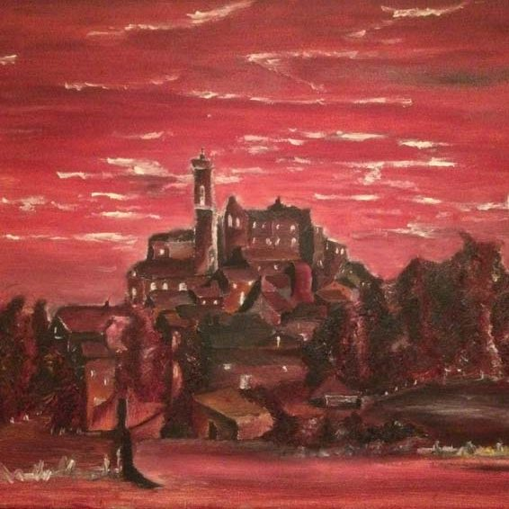
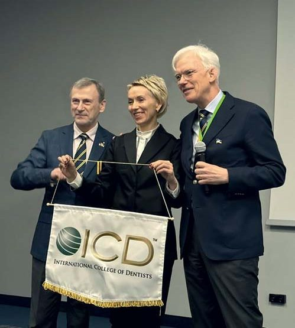
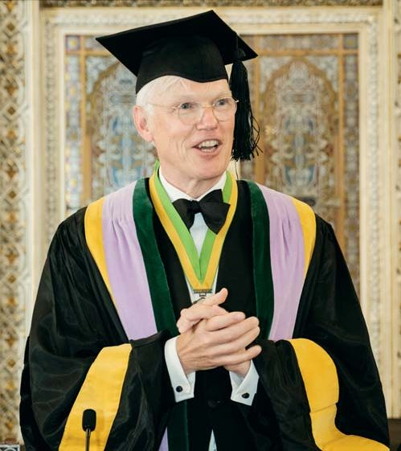
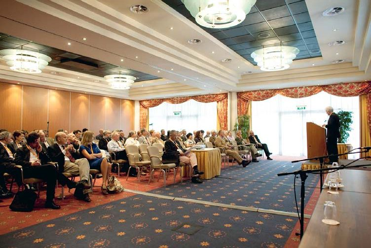
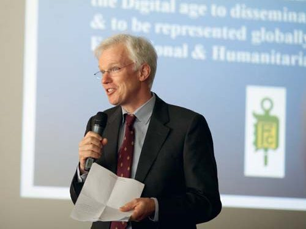
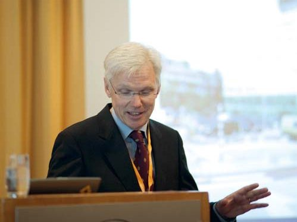
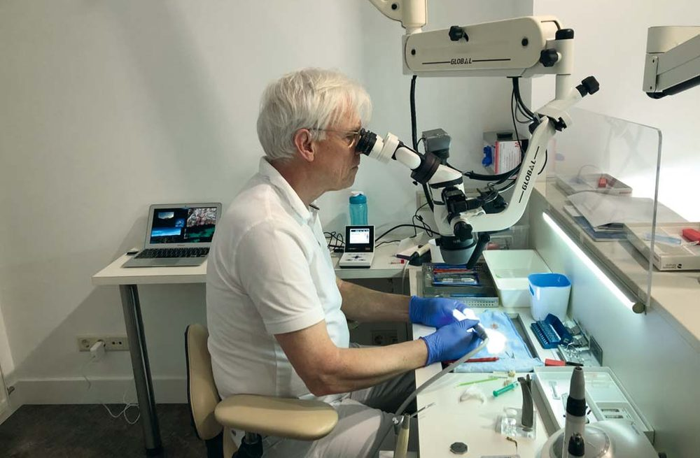
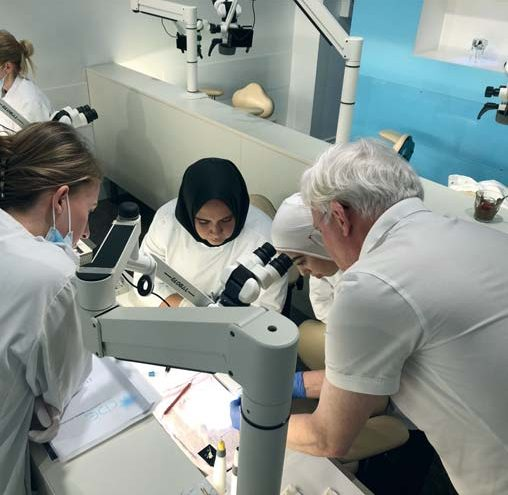
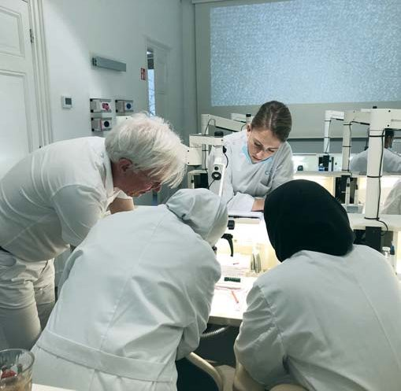
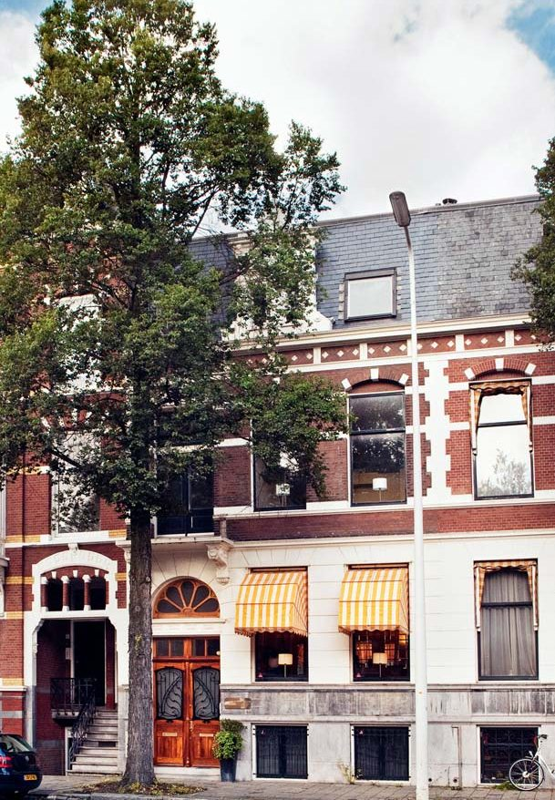
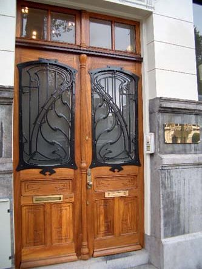
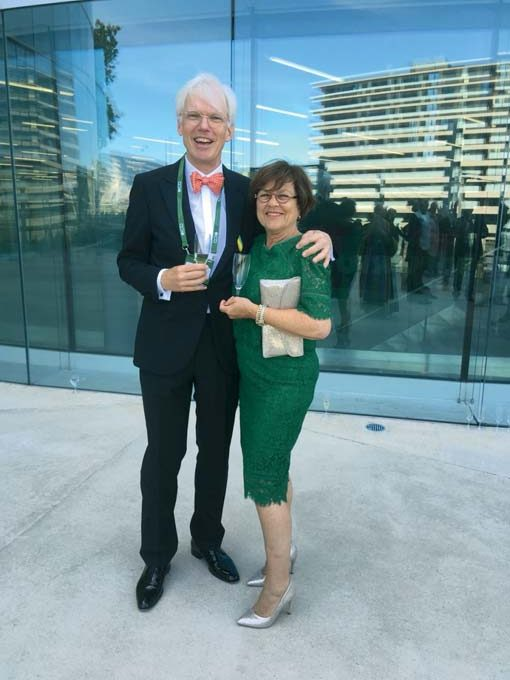
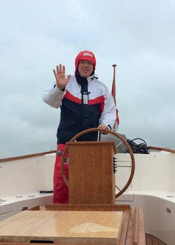
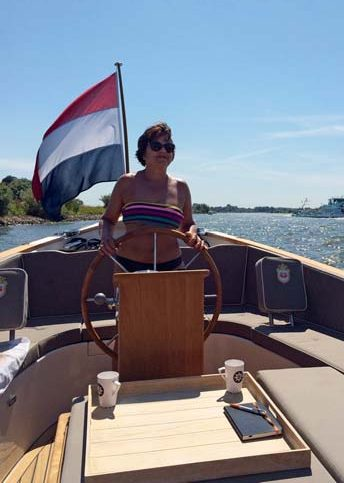
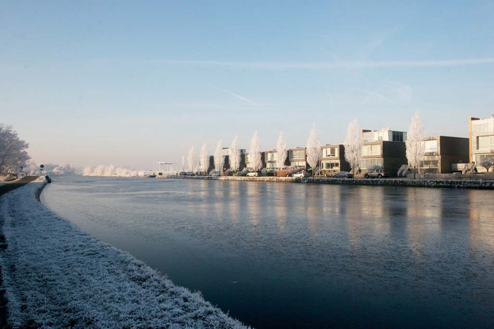
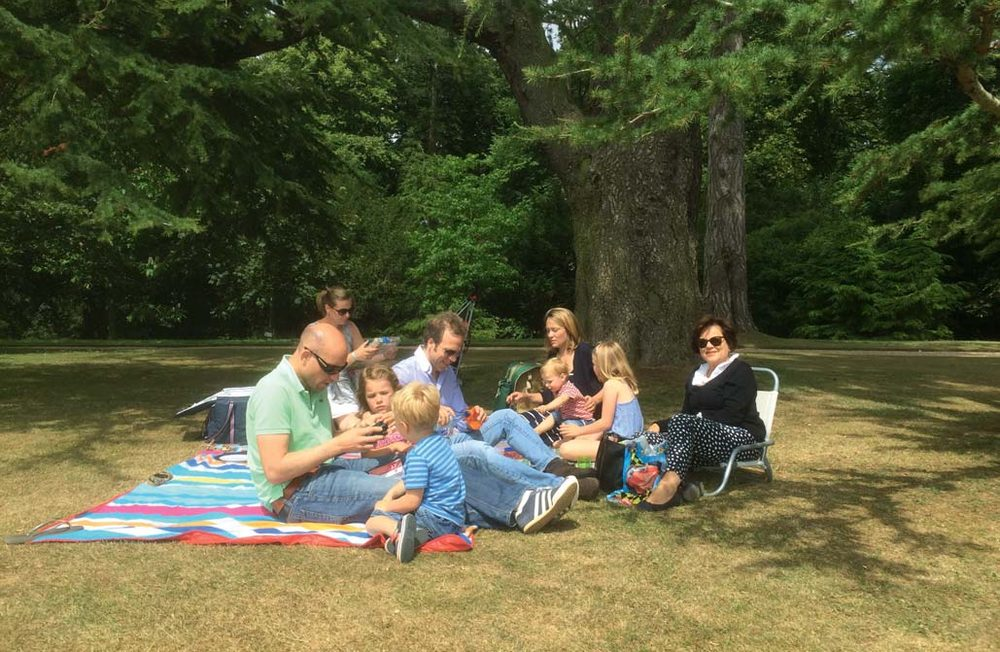
Вальтер дванадцятирічним уперше написав картину олійними фарбами. Новообраний президент Європейської секції ICD Вальтер ван Дрієль (Порту, Португалія, 2022 р.). Вальтер ван Дрієль на святкуванні Дня Cвятої Аполлонії у Латвії разом із регентом Дистрикту 15 Сергієм Радлінським і віцерегентом Айвою Пакулє (2022 р.). Вальтер ван Дрієль читає лекцію на засіданні ICD. Відкриття гуманітарного форуму: професор Дрієль — модератор наукового дня ICD в Маастрихті, Нідерланди, 2010 рік. Професор Дрієль працює над найскладнішими клінічними випадками. Вальтер ван Дрієль працює з молодими стоматологами у Центрі інноваційної стоматологічної освіти, передаючи їм знання, досвід і навчаючи відповідального ставлення до пацієнтів. Стоматологічна практика і Центр інноваційної стоматологічної освіти (CIDE) професора Дрієля. Неллі і Вальтер завжди разом, зокрема і на зустрічах ICD, наприклад, у Женеві 2018 року. Неллі надає перевагу гарній погоді. Вальтер попливе навіть у негоду. Життя з Неллі на березі ріки. Родина Вальтера і Неллі: двоє синів, невістки, дві внучки і два внуки.
Чи ти король, чи безробітний, у нашій країні ставлення до тебе однакове
— Три століття тому Голландія була знаменита не лише кораблебудуванням, твердим сиром, синьою керамікою і вирощуванням тюльпанів, але й зубними художниками, які надавали публічну допомогу людям, що страждали на зубний біль… У сучасній стоматології в країні щось залишилося з тих часів, чи це лише історія в графіці і на полотні?
— О, це цікаве запитання, але водночас складне. Я твердо вірю, що історія завжди має певний вплив на сучасність. У нас у Голландії багато музеїв, і серед них — музей, який стосується стоматології і медицини.
Є відома картина з чотирма малюнками всередині рами, де дантист з янгола перетворюється наприкінці на диявола. Якщо ви врятували людину від зубного болю, потім ви піклуєтеся про цю людину і слідкуєте за її клінічним випадком — ви герой. Але потім приходить рахунок. І як можна надіслати рахунок людині, котра зазнала гострого зубного болю?
Основною рисою того часу, яка збереглася до наших днів, є наша соціальна система в стоматології. Незалежно від того, чи ти король, чи ти безробітний, у нашій країні ставлення до тебе однакове. І я думаю, що така соціальна система все ще збереглася в Голландії. Якщо людина не може оплатити лікування, то голландські лікарі попіклуються про неї. Про це не говорять, але це все ще залишилося в нашій соціальній системі з тих часів. Тож, можливо, наша соціальна система відображена на наших картинах. У кількох країнах, де не було такої системи в соціумі, люди не є такими чуйними до інших, як голландці. Вибачте, що скажу, але я пишаюся тим, що у нас є така соціальна система, і я пишаюся тим, що є частиною цієї системи.
Працюю тільки з тими пацієнтами, які мають складну клінічну ситуацію
— У Вас із дружиною є власна стоматологічна клініка… За яким принципом вона організована: як загальна практика за місцем проживання пацієнтів чи як спеціалізована, коли пацієнти знаходять клініку за особливими потребами? Яку допомогу пацієнтам Ви вважаєте найважливішою?
— У мене ніколи не було загальної практики. У 1988 році я розпочав власну практику, що спеціалізується на ендодонтії. Тож я належу до першого покоління приватних ендодонтистів за межами університету. Я абсолютно відрізнявся від інших ендодонтистів і донині працюю інакше.
Я також намагався у наукових програмах пояснити, чому інша система роботи є кращою, ніж те, що ендодонтисти роблять зазвичай. Що зазвичай роблять ендодонти в Голландії? Вони проводять усе лікування системи кореневих каналів для певних стоматологів.
Наприклад, я живу у вашому районі, і вам подобається, як я виконую свою роботу, то ви можете направляти мені всіх своїх пацієнтів із ендодонтичним лікуванням, навіть дуже прості клінічні випадки. Але щодо мене, я ніколи не працюю із досить простими клінічними випадками, я берусь тільки тоді, якщо мені спочатку пришлють направлення та результати обстеження пацієнта. А потім я вирішую, чи буду працювати із цим клінічним випадком. Тому що моя головна мета полягає в тому, як вирішити проблеми, а не заробити гроші на легких клінічних випадках, як це роблять деякі ендодонтисти. Я дуже перебірливий. Працюю тільки з тими пацієнтами, які мають складну клінічну ситуацію. І у мене завжди є один дуже чіткий критерій: клінічний випадок має бути достатньо цікавим для моїх послідовників, інших стоматологів і читачів журналів, подібних до вашого. У мене ніколи немає своїх власних пацієнтів. Але якби направили до мене свого пацієнта, ви залишилися б зі мною надовго. Тому що я стежу за клінічним випадком протягом п'яти років. Якщо все добре — я припиняю стежити. Це загальносвітовий академічний консенсус для дослідницьких цілей.
Сад, високі стелі та сучасне обладнання…
— Голландські живопис, графіка відомі на весь світ, а сучасні стоматологічні клініки мають твори мистецтва в інтер'єрі, в стоматологічних кабінетах… Де у Вашій клініці є твори мистецтва і яку роль Ви їм відводите?
— У мене в кабінеті лише сучасні твори мистецтва. І всі вони мають релігійний аспект. У цих картинах є краса та динаміка. Коли пацієнти, яких направили до мене, приходять уперше, я повинен справити на них позитивне враження. Це дуже важливо. Уся обстановка у стоматологічній практиці повинна створювати атмосферу, відмінну від лікарняної стерильної. Коли люди приходять до мене, вони дивуються, побачивши сад, високі стелі та сучасне обладнання. Моя клініка — це дуже старий будинок 1919 року із сучасним мистецтвом. Пацієнти дивляться на ці потужні відомі релігійні картини, і ці твори мистецтва стають темою для обговорення для мене і пацієнта. Сучасні твори мистецтва, що є у мене в клініці, стосуються двох основних речей: краси та перемоги добра. І ці картини покликані втішати людей.
— Музика є невід'ємною частиною нашого життя, і я знаю, що Ви захоплюєтеся класичною музикою. Упевнений, що музика звучить у Вас у клініці і вдома. Але чи з Вами музика, коли Ви їдете на роботу в клініку на велосипеді?
— На велосипеді? Ні. У мене є airpods, але через швидкий велосипед мені заборонено слухати музику під час їзди. Дружина Неллі завжди дуже хвилюється за мене. Тому що насправді я досить слабка людина, я дуже вразливий. Люди можуть легко обдурити мене, завдати мені болю. Тому коли я їду лісом, то слухаю птахів, а не музику.
У мене є спеціальна кімната для прослуховування музики. І я сподіваюся, що зможу Вам її показати, коли Ви завітаєте. У мене всюди вдома музика. Але у нас із Неллі різні музичні вподобання. Тому я хочу побути на самоті, коли слухаю музику.
У клініці музика не звучить постійно. Якщо я роблю пацієнтові анестезію, має бути мертва тиша. Медсестрі чи будь-кому іншому заборонено говорити чи шуміти. Коли я роблю анестезію в абсолютній тиші, це краще для пацієнта. Так ви отримуєте сто відсотків успіху в анестезії. Тому під час лікування я музику не слухаю. Повна тиша.
Музика для мене… це як запах. Якщо ти відчуваєш запах чогось… завжди маєш приємні спогади. Пов'язуєш запах зі своєю матір'ю чи запахом рідного дому. Запах ніколи не зникає. Те саме з музикою. Скажімо, музика завжди повертає мене в той час, коли я був такий щасливий наодинці з батьком у його кабінеті…
Фітнес-стоматологія прийде пізніше
— П'ять років тому на щорічній зустрічі Європейської секції ICD в Женеві професор Іво Крейчі проголосив, що стоматологія майбутнього має бути фітнес-стоматологією, а сам стоматолог має відігравати роль тренера. Як Ви ставитеся до цієї ідеї?
— Це було метафорою чи сказано в буквальному значенні?
— Ви цього не пам'ятаєте?
— Це важливіше для Вашої роботи стоматолога-реставратора, ніж для моєї. Після того, як Ви закінчите свою роботу, я вважаю, що Ви повинні бути тренером для свого пацієнта, тому що Ви виконуєте багато роботи. Можливо, це мінімально інвазивний, дуже біологічний спосіб…
— Чи не інвазивний…
— Так. І найголовніше по закінченню роботи стоматолога-реставратора — це «технічне обслуговування». А для обслуговування слід тренувати пацієнтів. Але «технічне обслуговування» — це також навчання, і це, на мою думку, найважливіша частина лікування. Те ж саме, коли ви купуєте дорогу річ, тому що вам це потрібно. Наприклад, вам потрібен автомобіль, тому що ви маєте переїжджати з місця на місце. Тож хтось може продати вам машину, яка найбільше для вас підходить, і ви спокійно та безпечно можете їхати додому. Ви можете розраховувати на те, що машина не зупиниться на півдорозі. Поганий дилер не дає вам нічого після продажу, він не забезпечує вам технічне обслуговування цієї машини. Те саме і з зубами. Ми розмовляємо, жуємо цими зубами цілий день. Тож реставровані зуби потребують певного обслуговування.
— Ви користуєтеся нічною капою?
— Ще ні, але мушу, тому що мені встановили нову коронку…
— Я рекомендую своїм пацієнтам використовувати денну капу, коли на них очікує стрес.
— Ви зробите для мене нічну капу?
— Добре… Тож що Ви думаєте про згадану фітнес-стоматологію? Чи має вона перспективи стати реальністю?
— Ні. Я бачу реальний світ. На жаль, ми з вами не станемо свідками цієї майбутньої фітнес-стоматології. Бо наразі багато проблем у стоматології на кожному рівні. Це починається з освіти. Я знаю, що в багатьох країнах є проблеми з освітою, наприклад такі, як знайти потрібного викладача. Також ми маємо проблему зі зміною поколінь. Молоді стоматологи інакше думають про стоматологію. Роботи стає більше, ніж неповний робочий день, і це буде проблемою. Якість стоматології у багатьох країнах стає важливішою для страхових компаній, ніж для самих стоматологів. Тож я вважаю, що фітнес-стоматологія прийде пізніше, але ми з Вами зустрінемося з цим уже на небесах.
Найкращий спосіб розслабитися — це спілкування з людьми
— Ваша сім'я є стоматологічною, Ви ведете стоматологічну практику разом з дружиною Неллі і партнеркою. Чи Ваші діти також обрали стоматологію своєю професією?
— Ні. І я можу дати Вам дуже коротку відповідь. Але Ви можете й самі зателефонувати Герману і Воутеру, і вони скажуть: «О, приємно почути Вас, професоре! Ми знаємо Ваше ім'я від батька, він дуже добре про Вас говорив. Але ні, ми не станемо стоматологами. Нам не подобається бути бідним стоматологом, тому ми вивчали економіку».
— Тож яку професію обрали Ваші сини?
— Обидва вивчали економіку. Вони абсолютно різні, але студіювали одне і те ж. Також вони вивчали міжнародний бізнес. У них є дещо спільне зі мною — вони зацікавлені у співпраці з іноземними країнами і працюють на міжнародному рівні. Воутер став банкіром, на мою думку, дуже успішним. Герман спочатку працював у компанії Philips, як і мій батько, а потім — в іншій компанії.
— Можливо, хтось із внуків піде за Вашим прикладом у стоматологію?
— Найстаршій онучці Аннефлер, доньці Воутера, лише 14 років, але вона любить іноді допомагати мені в практиці. Ми лікуємо когось зі знайомих. Її сестрі Розалі 12, і у нас є два хлопчики, сини Германа — Ар'ян, якому 11, і дев'ятирічний Віго…
— Сучасний темп життя — це суцільний стрес, і стоматологи все частіше страждають від емоційного вигорання… Як Ви з дружиною долаєте стрес?
— Звичайно, наше життя не без стресів. Але ми намагаємося створювати позитивний стрес. Засвоювати певні уроки з цього. Головне, я вірю, що ми з Неллі створені одне для одного. Навіть якщо ви нас особисто не знаєте, то навіть на фотографіях можете побачити, що ми з Неллі доповнюємо одне одного. Ми абсолютно різні. У Неллі дуже сильний характер, для неї немає труднощів. Вона боєць. Щодо мене, то я маю м'який характер, я філософ, завжди бачу проблеми, у вирішення яких, як мені здається, я повинен втрутитися. Тож це викликає у мене стрес. Але бути разом — це наш спосіб зняти стрес. Завжди виїжджаємо кудись разом.
Ми з дружиною багато займаємося спортом. Неллі подобається грати в бридж на професійному рівні, я люблю грати в гольф з друзями. Граю в теніс щотижня разом зі своїми друзями, яких знаю вже 40 років. Усі ми маємо різні професії, щотижня спілкуємося на різні теми, тож це не лише гра в теніс. Я вважаю, що спілкування з людьми не лише однієї, а й різних професій допомагає долати стрес.
У мене ніколи не було синдрому вигорання. Щоб уберегтися від цього синдрому, рекомендують постійно вивчати щось нове. Проте для мене найкращий спосіб розслабитися — це спілкування з людьми. Але мушу визнати, що бути президентом мені нелегко. Кожен день я щось роблю, багато пишу, спілкуюся з багатьма людьми. Тож на мою думку, нам слід зосередитися на нашій дружбі, нашому товаристві, і якщо ми добре працюємо, то можемо піклуватися про людей, яким, як я вже казав, пощастило менше.
— А щорічна зустріч з друзями в ICD — найкращий антистрес…
— Саме так.
— Що б Ви побажали читачам журналу «ДентАрт» на завершення нашої віртуальної зустрічі?
— По наших жилах тече кров, у нас є душа, але всі ми різні, тому що живемо в різних регіонах, маємо різне походження, наші держави мали різну історію, різний рівень свободи людини і турботи про неї, і це тривало століттями, саме тому ми такі різні. Але я хочу дати колегам одну, на мою думку, дуже важливу пораду: будьте активними, підтримуйте зв'язок один з одним, спілкуйтеся! Будьте активні настільки, наскільки це можливо. У наші часи це так просто! Спілкуючись з друзями багато років, мені доводилося писати листи і надсилати листівки, це досить складно. У наш час e-mail, zoom значно полегшують спілкування. Тож спілкуймося, обмінюймося досвідом, щоб робити людей здоровішими, а відтак щасливішими!
— Дякую Вам, шановний Вальтере, за виділений час, цікаві відповіді і думки про нашу професію та Міжнародний коледж стоматологів! Від імені українських стоматологів, які зараз працюють у важких умовах російської агресії, зичимо Вам успіхів на всіх напрямках Вашої діяльності! А всім нам — миру на планеті!